Звіт по заміні труб
Хроніка
Не секрет, що в новітній історії нашого будинку не було і року без аварії в підвалі або прориву десь в
перекриттях. А випадки забиття труб на окремих поверхах навіть не підраховувались і частіше за все
вирішувались силами мешканців квартир. Це все було результатом старих труб термін придатності котрих вже
добігав кінця. Тому, хоча ідея заміни труб досить довго витала в повітрі, але сформувалась лише наприкінці
осені 2023 року.
Останніми краплями стали прориви в вересні 2023 року. Спочатку, 6 вересня, в нас прорвало
трубу в підвалі.
Тоді значно затопило підвал і був викликаний ЖЕК який декілька днів усував цю проблему. Наступним став ще
один прорив 8 вересня, вже між будинками 38А та 38Б. Водоканал був викликаний
для проведення
аварійних робіт, але цей прорив лагодили аж до 12 вересня з регулярним відключенням води.
І останнім
цвяхом став прорив води в підвалиі 21 вересня, який також лагодили декілька днів за
допомогою хамутів і
полієтелену.
Тоді стало остаточно зрозуміло, що данні труби вже відживають своє і згідно всім гостам надалі будуть все
частіше виходити з ладу. Таким чином єдиним способом вирішити проблему на корню була повна заміна труб.
Після того як це питання почало з'являтись в чатах, 22 вересня Тетяна підняла це питання
на
більш-меньш предметному
рівні з пропозицією організувати роботи.
Перша невдала спроба
Тоді ж 22 вересня були проведені перші збори в дворі під будинком. За результатами
зборів стало відомо, що більшість мешканців будинку дійсно турбує питання якості трубопроводу. Більшість
мешканців які вийшли на збори були за заміну труб, і вносили свої пропозиції щодо матеріалів та бригад
які можуть виконати ці роботи. Тоді ж, посилаючись на досвід мешканців будинку, і виявили приблизну
вартість майбутніх робіт і матеріалів. Особливо допомогли в цьому Олександр з 20 квартири, та Яна з
7ої. Ще раз дякуємо вам!
Через день, після більш детального опитування, стало відомо, що тільки на правому стояку 3х кімнатиних
квартир є консенсус з цього питання. То ж було вирішено почати заміну труб заме з цього стояка. Таке
рішення давало змогу частково перекрити нагальні проблеми, а також протестувати як саме буде проходити
заміна труб, що б була змога більш легко в майбутньому зробити заміну і на інших стояках.
І хоча вже була проведена попередня оцінка робіт виконавцями, нажаль, через те, що власниця однієї
квартири
змінила свою думку, роботи не розпочались. Все ж була надія колись провести ці роботи комплексно для
всього стояка, адже не хотілось оминати квартиру які проти, бо це б не вирішило проблему зі стояками, а
лише створило б слабкі місця в системі які б проривали ще частіше.
Друга невдала спроба
За іронією долі, десь на початку грудня 2023 року, у власниці котра була проти заміни труб
прорвало стояк.
Це, а також активне сприяння зацікавлених мешканців будинку дало результат. Таким чином вже до
10 грудня 2023 року був створений окремий чат для заміни всіх труб правого стояка.
Втім в 2023 році Різдво відзначали 25 грудня. Це досить велике християньске свято і мешканцями будинку було
вирішено відкласти заміну труб через побоювання, що міняти їх будуть прямо на свята. Це був вже другий раз
коли ми спочатку домовлялись з бригадою про проведення робіт, а потім їх відміняли. Цього разу була надія
поновити роботи після свят.
Заміна труб правого стояка
Роботи з заміни труб почались 22 січня 2024 року. Замінювати труби правого стояка
почались з кухні. В цьому випадку можна було прозвести заміну труб зі
сторони під'їзду. І незважаючи на недавній ремонт багато мешканців скористались цією можливісттю.
Банально компенсувати відро фарби і пару цеглин значно дешевше ніж розбирати кухні і розбивати плитку.
Втім таку ініціативу не оцінили окремі мешканці будинку і викликали представника ЖЕК'у, тому вже через
декілька годин після початку робіт робітниця з ЖЕК'у
була на місці і почала блокувати роботу бригади. Але на щастя вже був доступ до стояку на 9ому поверсі і
можна було наглядно оцінити стан труб. А стан був такий що вже зрів прорив, бо цемент в перегородці
був мокрим, як і вкрита ржавчиною труба (яку потім просто відломали голими руками). То ж
дипломатія
Олександра (прораба) і Тетяни разом з наглядним
прикладом змогли переконати
робітницю ЖЕК'у в необхідності заміни труб... тим паче за кошти мешканців будинку.

Після того як проблеми з ЖЕК'ом були вирішені бригада продовжила роботи по демонтажу труб. В цілому
труби були надзвичайно забиті і пошкоджені корозією. Також, як показала практика, найбільше труби були
пошкоджені в міжповерхових перекриттях, де метал контактував з бітоном. Там труби були подекуди згнивші
настільки, що ламались в руках від невеликого зусилля.
Втім, варто зазначити, що на поверхах труби були хоч і зашлаковані, але не в такому критичному стані.
Тобто їх в теорії можна було б прочистити і продовижити користування, але будь-яке наступне прочищення
ще більше ускладнювало б ситуацію в міжповерхових перекриттях, і дивлячись на їх стан, можна сказати, що
з
великою ймовірністтю, нас в 2024 році чекали б ще багато проривів які вже зріли і які було б складно
усунути.
Після заміни труб на кухні бригада розпочала заміну труб в ванні. Там роботи пройшли трішки швидше бо доступ
до стояка у багатьох був досить легким. Втім багато мешканців замовили собі додаткові роботи. Хтось
встановив новий унітаз, хтось гігієнічний душ, хтось замінив труби або додав фільтри для дрібних домішок.
Роботи завершились приблизно 10 лютого. Враховуючи роботи в підвалі, про які згодом, хлопці
працювали майже два тижні, після чого всі взяли 3 денну відпустку.
Забита каналізація
Хоча каналізація забилась на ділянці яка не лежить в зоні відповідальності будинку, і не відноситься до
заміни труб взагалі, втім, цей прорив суттево вплинув на ситуацію в цілому. Тому в данній історичній
довідці неможливо оминути цей епізод.
То ж 6 лютого 2024 року забилась каналізація в діляньці, що знаходиться в сфері
віпдовідальності водоканалу. Цього ж дня була перекрита вода, а також всіх мешканців будинку попросили
максимально обмежити використання каналізації.
Того ж дня ми встали в чергу на прочистку каналізації, але зараз у водоканалу працює лише одна бригада,
і то не до
кінця укомплектована. Через це в місті нараховувалось близько 50 подібній нашій проблем, і деякі містяни
вже не перший тиждень чекали на свою чергу по аварійним роботам. Дивлячись на це в нас був вибір між
наймом приватної компанії (за 1700грн) чи відмовою від каналізації на дні, або навіть тижні.
8 лютого 2024 року, коли вже стало відомо, що чекати нам ще доведеться довго, таки було
прийнято рішення оплатити роботи приватній компанії з коштів які були отримані від продажі труб правого
стояка.
Заміна труб лівого стояка
Заміна труб лівого стояка вбачалась набагато легшою бо більшість питань та проблем вже були відпрацьовані на
правому стояку. Але виникли перепони іншого сенсу. Річ в тім що всі квартири були згодні на заміну труб,
окрім першої. І причина була досить зрозумілою - неможливість на данний момент оплатити роботи і матеріали.
Але, так як з правого стояка залишились: коліна, труба довжиною 2 метри та ще декілька дрібниць - було
вирішено все ж замінити труби в першій квартирі частково використовуючи ці матеріали, а частково з внесків
мешканців квартир лівого стяока. Оплату же робіт було домовлено прозвести пізніше, десь влітку, коли буде
можливість трішки зібрати кошти в фонд ОСББ.
УВАГА! Події описані в спойлері носять не дуже приємний характер. Автор бере на себе
відповідальньність описуючи їх, з сподіванням що розголос допоможе в уникненні подібних ситуацій в
майбутньому.
Читати що трапилось
Мешканці першої квартири спочатку погодились надати доступ до стояків, що б провести заміну труб, але
згодом, коли діло дійшло до огляду стояків і вже безпосередньо підготовці до виконання робіт - чомусь
передумали і відмовились надавати доступ до стояків. Тобто в якийсь момент вони
просто перестали відчиняти двері, вдаючи, що нікого немає вдома. Така поведінка не просто сповільняла
підготовку до виконання робіт, а навіть саботувала їх. Бо без доступу до перошого поверха не можливо було
б прозвести заміну всього стояка. Довелось би повертати матеріали і гроші всім хто вже скинувся. Тільки
дякуючи небайдужим мешканцям будинку (і мова не про автора данного тексту) роботи вдалось розблокувати.
Від себе ще додам, що все можливо зрозуміти і всі питання можливо вирішити. Якщо немає змоги оплатити, чи
є
будь-яка інша проблема\перешкода - завжди можна знайти вихід в діалозі. Подібне саботування робіт, ще й в
умовах, коли вони проводяться частково за рахунок всіх мешканців, просто НЕДОПУСТИМО. Це шкідництво
заради шкідництва і маю сподівання, що в майбутньому подібних прецедентів не буде. В усіх нас одна мета -
зробити проживання в цьому будинку максимально комфортним і затишним, з урахуванням можливостей і потреб
його мешканців. Вважаю що співпрацювати для досягнення цієї мети значно краще ніж спрямовувати свою
енергію на подібні витівки і боротьбу з ними.
Втім вже 20 лютого 2024 року бригада приступила до роботи над заміную стояків 3х
кімнатих квартир по ліву сторону нашого будинка. При проведенні робіт знову виявилось, що труби в
перекриттях майже прогнили, хоча на поверхах були ще в більш-меньш придатному для експлуатації стані
(після прочистки, звісно). Слід окремо зауважити, що надійність всієї системи залежить від найслабшого
місця,
тому навіть після прочистки, як і в випадку з правим стояком, нас чекали б нові прориви.
Цього разу роботи проводились вже за відпрацьованним алгоритмом і тому проблем виникало значно меньше.
Дякуючи майстерності працівників і гарним организаційним навичкам Тетяни і Олександра (прораба), на
сьогоднішній день, а саме на 28 лютого 2025 року всі роботи вже завершені.
Заміна труб в підвалі
Роботи в підвалі проводились в 3 етапи. Перший етап був при заміні труб на правому стояку. Тоді ж
замінили труби в підвалі, що йшли від квартир до загальних мереж. По аналогії, труби від квартир до
загальних мереж були замінені для лівого стояка під час виконання там робіт. Завершуючим етапом були
роботи в підвалі по заміні всіх труб що залишились, ці роботи проводились коли вже всі стояки були
замінені.
Фінансування цих робіт проводилось більшою мірою за рахунок коштів що надходили з продажу старих
металевих труб. Значно меньшою часткою вони перекривались за рахунок надлишкових коштів з матеріалів
кожного стояка. Також, нажаль, Тетяні довелось закласти 6000 грн своїми коштами, що б
завершити роботи.
Наразі в підвалі всі труби пластикові, гарно зафіксовані. Єдині труби, що залишились - це стояк
двох-кімнатних квартир. Але маємо надію, що зможемо замінити ці труби в найближчому майбутньому.
Результат роботи можна побачити не тільки на відео, а й на фото. Ці фото були зроблені вже після завершення
всіх робіт. Як можна побачити, всі труби замінені на пластикові, окрім тих що йдуть до 2х кімнатних квартир.
Також з цікавого - блакитна труба внизу, що лежить на цеглинах. Це результат роботи ЖЕК'а 😁. З одного боку
наче й
зробили, а з іншого.... ехх. В майбутнбому цю трубу зможемо довести до ладу й зафіксувати на стіні, як й
належить.
Підсумок
Озираючись на ці майже півтора місяці легко упустити з зору той колосальний об'єм роботи, що був виконаний.
Мешканці цього будинку організувавшись змогли якісні матеріали за найнижчими цінами і бригаду яка
згодилась провести роботи за вартістью значино нижчою ринкової.
Звісно, ми й зараз не застраховані на 100% від якихось аварій, але ризик їх появи меньш ймовірний. Труби,
звісно,
потрібно буде раз на декілька років прочищати, але вода вже чище, тиск води більший, а аварій гарантовано
буде значно меньше.
Ці півтора місяці довели дуже просту, але смішну істину: одна вмотивована людина може досягти більшого
прогрессу за місяць, ніж організація людей які сидять "на зарплаті" за роки. Сподіваюсь, вже зовсім скоро,
ми зможемо
також замінити труби в 2х кімнатних квартирах, що б назавжди позбутись радянської спадщини, а разом з нею і
традиції раз на квартал перекривати воду бо в когось прорвало труби :)
Фінансові звіти
То ж, до переліку послуг та матеріалів що підлягають оплаті входить:
- Заміна каналізаційних труб на кухні і в ванні
- Заміна водопровідних труб на кухні і в ванні
- Роботи з демонтажу перекриттів та роботи з їх відновлення
- Демонтаж труб гарячої води
- Заміна труб в підвалі
- Розхідники та матеріали
Оплата за матеріали і за послуги проходила різними шляхами. За послуги мешканці платили самостійно прямим
переказом на рахунки компанії-виконавця. За метеріали мешканці перераховували кошти Тетяні яка їх або купувала
самостійно, або компенсувала кошти за матеріали бригаді.
Ще одним джерелом фінансування заміни труб стали старі металеві труби. Їх вдалось здати і на виручені кошти
майже повністью покрити роботи в підвалі та оплатити описанний вище прорив.
Бригада на об'єкті працювала за низькими тарифами які з березня місяця 2024 року зростуть, а
матеріали закуповувались в "оптовій базі" через їх низьку там вартість. Гроші взимались лише за доставку
довгих труб, все інше безоплатно будо доставлено Тетяною і Олександром.
Правий стояк
Вартість матеріалів
Особливісттю правого стояка є те що багато матеріалів були закуплені компанією, тому маємо велику
роздруківку матеріалів і їх цін.
Загалом на матеріали правого стояка було зібрано 17500грн. Вартість всіх
матерівалів складає 17071грн. За рішенням мешканців будинку, різницю було вирішино
витратити на підвал та\або поточні проблеми будинку.
Вартість робіт
Роботи оплачуваливсь кожним мешканцем окремо на рахунки компанії або готівкою на руки. Чек робіт залежав
від простоти доступу
до стаяка, а також суммі робіт які необхідно було виконати по квартирі.
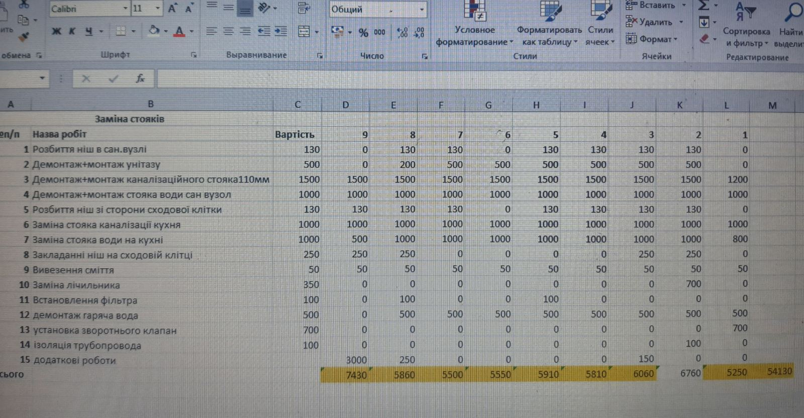
Розрахунки і залишок
Під час робіт були здані старі труби на металобрухт, а також повернуті частина матеріалів які не
знадобилиись. То ж підсумовуючи
- Продаж труб: 3200грн
- Повернення матерівалів: 1100грн
- Різниця зібраного\витраченого: 400грн
Як результат 4700грн залишались в фонді, з яких 1700грн 😞 пішло на
усунення проблеми забитої каналізації, а 3000грн пішли на роботи в підвалі. Цікаво, що
компанія оцінювала роботи в 3500грн, але у Тетяни на руках було тільки
3000грн, то ж сторгувались за цю сумму.
Лівий стояк
Особливісттю лівого стояка стало те що одна квартира не мала змоги оплатити роботи, то ж оплату робіт по цій
квартирі відстрочили на декілька місяців і потім оплата буде прозведена з фонду ОСББ.
Вартість матеріалів
Для лівого стояка більшість матеріалів закуповувалась Тетяною. Тому маємо на руках чеки, що
допоможе зрозуміти приблизну вартість матеріалів. Загалом зібрали на матеріали
15000грн з яких 15681грн були витрачені.
Вартість робіт
Роботи оплачуваливсь кожним мешканцем окремо. Чек робіт залежав від простоти доступу
до стаяка, а також суммі робіт які необхідно було виконати по квартирі.
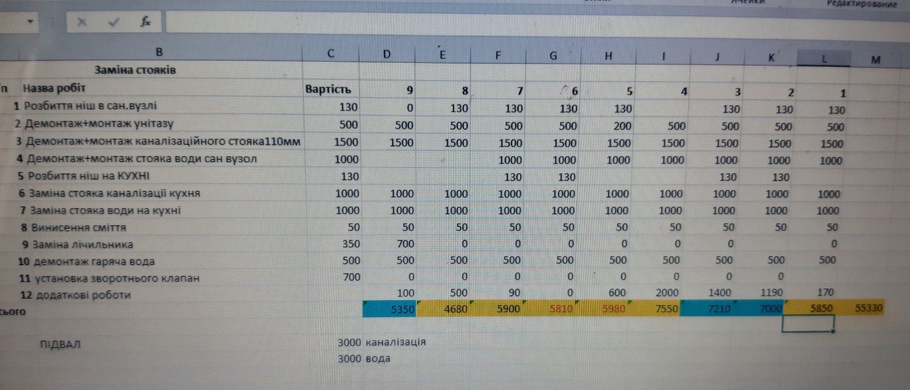
Розрахунки і залишок
Як зазначалось вище оплата за ремонт першої квартири була відкладена на декілька місяців, то ж з фонду
ОСББ ця сумма повинна буде бути сплаченою пізніше. Але також вдалось отримати кошти з продажу труб та
поверненню
матеріалів:
- Продаж труб: 4000грн
- Повернення матерівалів: 1661грн
- Різниця зібраного\витраченого: -681грн
Як результат маємо 4980грн з яких на підвал пішло 3000грн, та залишок в
1980грн пішов на заміну загальних труб в підвалі.
Підвал
Як вже було викладено раніше, підвал робився в декілька етапів. Спочатку для 3х кімнатиних квартир правого
стояка, потім для 3х кімнатних квартир лівого стояка, і в завершенні загальні комунікації в підвалі та
стояки до 2х кімнатних квартир.
Вартість матеріалів
Загальна вартість матеріалів для підвалу складає приблизно 7000грн.
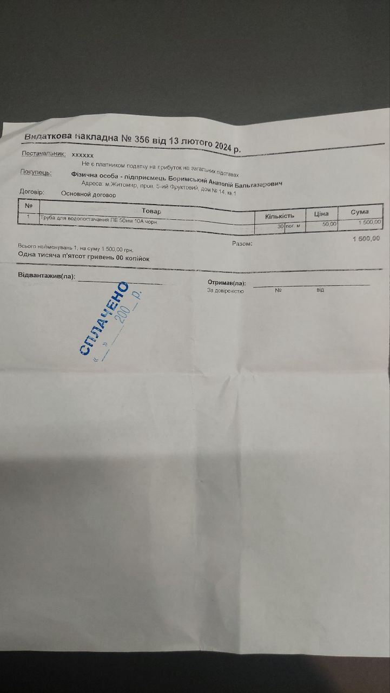
 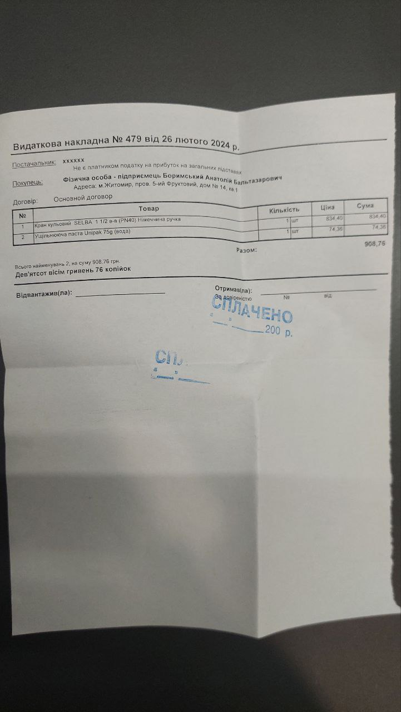
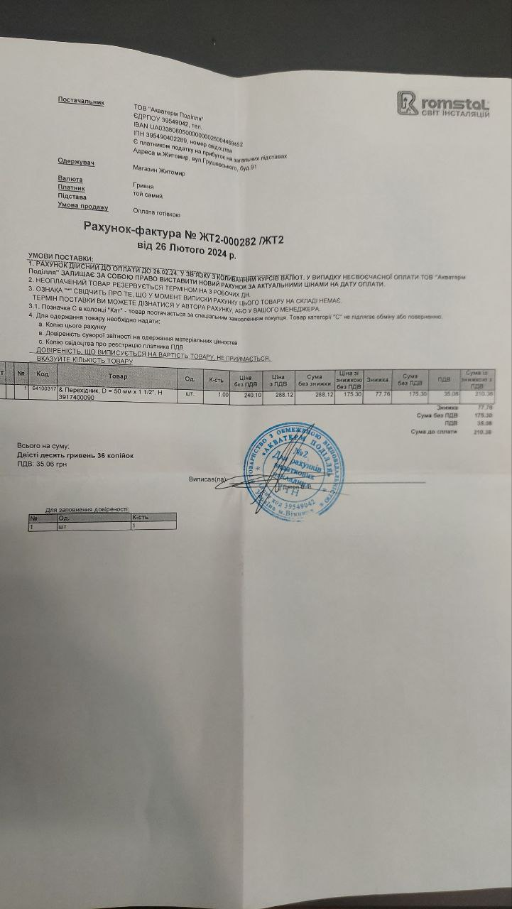
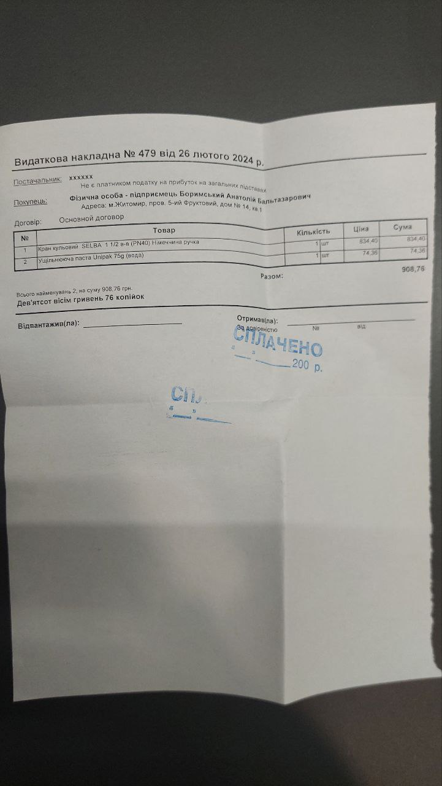
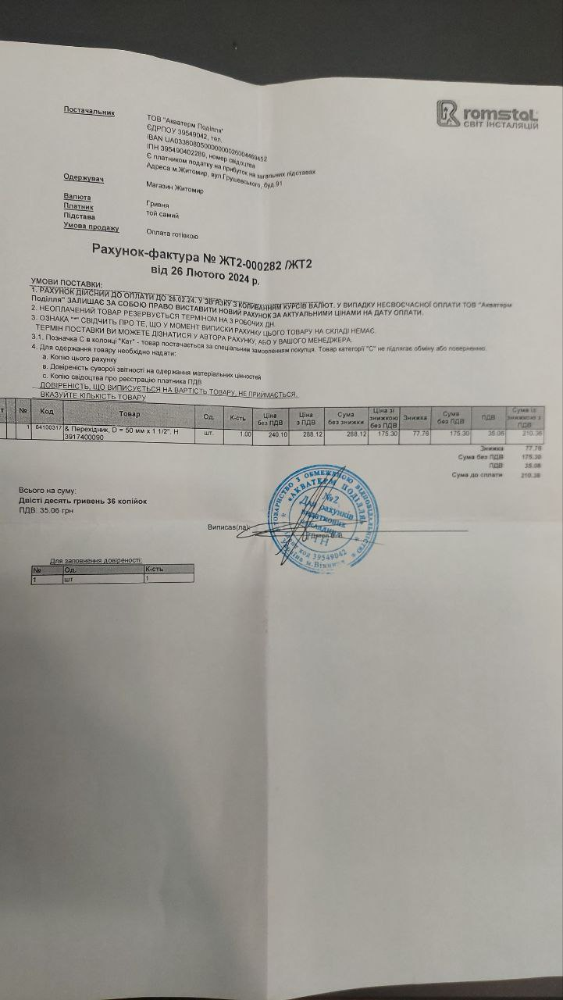
Вартість робіт
Вартість робіт склала приблизно 9000грн (узагальнено з лівим, правим стояками і
загальними мережами) на заміну комунікацій та
1700грн на прочистку каналізації. Загалом 10700грн.
Розрахунки і залишок
В підвалі також були старі металеві труби, які можна було здати. Їх вдалось здати на загальну вартість
2120грн.
В результаті ми накопичили зі здачі труб і матерілів + залишок з робіт 11799грн з яких:
- Права сторона: 4700грн
- Ліва сторона: 4980грн
- Підвал: 2120грн
В результаті ми сплатили 17875грн:
- Роботи по каналізації (загальні): 6000грн
- Роботи по воді (загальні): 3000грн
- Прочистка каналізації: 1700грн
- Матеріали: 7175грн
Тому виникла ситуація коли Тетяні довелось з власного рахунку скомпенсувати 6075грн для
того що б закрити питання заміни труб в підвалі. Тому якщо є бажаючі можна розділити цю сумму скинувши
Тетяні будь-яку частинку на картку:
5167 8032 7096 3486
копіювати
Зведення результату
То ж, на сьогоднішній день стояки в 3х кімнатних квартирах повністтю замінені. Також замінені всі труби в
підвалі. Але, що б досягти цього результату ми мали не тільки брати матеріали по найнижчих цінах, а й йти на
такі міри як відкладення платежу. Тому в підсумку маємо:
- Перша квартира за матеріали в фонд ОСББ: 2000грн
- Перша (але по факту борг на ОСББ) квартира за роботу: 5850грн
- Тетяна заплатила: 6000грн
В цілому не вистачило 11850грн (не враховуючи матеріали, бо за них скидались всім
будинком). Частину цих коштів ОСББ поверне компанії до кінця літа надходжень з в фонди, а
6000грн небайдужі мешканці будинку, сподіваюсь, розділять з Тетяною. Все ж спільну справу
робимо.
Дякую всім за увагу!
Хроніка
Не секрет, що в новітній історії нашого будинку не було і року без аварії в підвалі або прориву десь в перекриттях. А випадки забиття труб на окремих поверхах навіть не підраховувались і частіше за все вирішувались силами мешканців квартир. Це все було результатом старих труб термін придатності котрих вже добігав кінця. Тому, хоча ідея заміни труб досить довго витала в повітрі, але сформувалась лише наприкінці осені 2023 року.
Останніми краплями стали прориви в вересні 2023 року. Спочатку, 6 вересня, в нас прорвало трубу в підвалі. Тоді значно затопило підвал і був викликаний ЖЕК який декілька днів усував цю проблему. Наступним став ще один прорив 8 вересня, вже між будинками 38А та 38Б. Водоканал був викликаний для проведення аварійних робіт, але цей прорив лагодили аж до 12 вересня з регулярним відключенням води. І останнім цвяхом став прорив води в підвалиі 21 вересня, який також лагодили декілька днів за допомогою хамутів і полієтелену.
Тоді стало остаточно зрозуміло, що данні труби вже відживають своє і згідно всім гостам надалі будуть все частіше виходити з ладу. Таким чином єдиним способом вирішити проблему на корню була повна заміна труб. Після того як це питання почало з'являтись в чатах, 22 вересня Тетяна підняла це питання на більш-меньш предметному рівні з пропозицією організувати роботи.
Перша невдала спроба
Тоді ж 22 вересня були проведені перші збори в дворі під будинком. За результатами зборів стало відомо, що більшість мешканців будинку дійсно турбує питання якості трубопроводу. Більшість мешканців які вийшли на збори були за заміну труб, і вносили свої пропозиції щодо матеріалів та бригад які можуть виконати ці роботи. Тоді ж, посилаючись на досвід мешканців будинку, і виявили приблизну вартість майбутніх робіт і матеріалів. Особливо допомогли в цьому Олександр з 20 квартири, та Яна з 7ої. Ще раз дякуємо вам!
Через день, після більш детального опитування, стало відомо, що тільки на правому стояку 3х кімнатиних квартир є консенсус з цього питання. То ж було вирішено почати заміну труб заме з цього стояка. Таке рішення давало змогу частково перекрити нагальні проблеми, а також протестувати як саме буде проходити заміна труб, що б була змога більш легко в майбутньому зробити заміну і на інших стояках.
І хоча вже була проведена попередня оцінка робіт виконавцями, нажаль, через те, що власниця однієї квартири змінила свою думку, роботи не розпочались. Все ж була надія колись провести ці роботи комплексно для всього стояка, адже не хотілось оминати квартиру які проти, бо це б не вирішило проблему зі стояками, а лише створило б слабкі місця в системі які б проривали ще частіше.
Друга невдала спроба
За іронією долі, десь на початку грудня 2023 року, у власниці котра була проти заміни труб прорвало стояк. Це, а також активне сприяння зацікавлених мешканців будинку дало результат. Таким чином вже до 10 грудня 2023 року був створений окремий чат для заміни всіх труб правого стояка.
Втім в 2023 році Різдво відзначали 25 грудня. Це досить велике християньске свято і мешканцями будинку було вирішено відкласти заміну труб через побоювання, що міняти їх будуть прямо на свята. Це був вже другий раз коли ми спочатку домовлялись з бригадою про проведення робіт, а потім їх відміняли. Цього разу була надія поновити роботи після свят.
Заміна труб правого стояка
Роботи з заміни труб почались 22 січня 2024 року. Замінювати труби правого стояка почались з кухні. В цьому випадку можна було прозвести заміну труб зі сторони під'їзду. І незважаючи на недавній ремонт багато мешканців скористались цією можливісттю. Банально компенсувати відро фарби і пару цеглин значно дешевше ніж розбирати кухні і розбивати плитку.
Втім таку ініціативу не оцінили окремі мешканці будинку і викликали представника ЖЕК'у, тому вже через декілька годин після початку робіт робітниця з ЖЕК'у була на місці і почала блокувати роботу бригади. Але на щастя вже був доступ до стояку на 9ому поверсі і можна було наглядно оцінити стан труб. А стан був такий що вже зрів прорив, бо цемент в перегородці був мокрим, як і вкрита ржавчиною труба (яку потім просто відломали голими руками). То ж дипломатія Олександра (прораба) і Тетяни разом з наглядним прикладом змогли переконати робітницю ЖЕК'у в необхідності заміни труб... тим паче за кошти мешканців будинку.
Після того як проблеми з ЖЕК'ом були вирішені бригада продовжила роботи по демонтажу труб. В цілому труби були надзвичайно забиті і пошкоджені корозією. Також, як показала практика, найбільше труби були пошкоджені в міжповерхових перекриттях, де метал контактував з бітоном. Там труби були подекуди згнивші настільки, що ламались в руках від невеликого зусилля.
Втім, варто зазначити, що на поверхах труби були хоч і зашлаковані, але не в такому критичному стані. Тобто їх в теорії можна було б прочистити і продовижити користування, але будь-яке наступне прочищення ще більше ускладнювало б ситуацію в міжповерхових перекриттях, і дивлячись на їх стан, можна сказати, що з великою ймовірністтю, нас в 2024 році чекали б ще багато проривів які вже зріли і які було б складно усунути.
Після заміни труб на кухні бригада розпочала заміну труб в ванні. Там роботи пройшли трішки швидше бо доступ до стояка у багатьох був досить легким. Втім багато мешканців замовили собі додаткові роботи. Хтось встановив новий унітаз, хтось гігієнічний душ, хтось замінив труби або додав фільтри для дрібних домішок. Роботи завершились приблизно 10 лютого. Враховуючи роботи в підвалі, про які згодом, хлопці працювали майже два тижні, після чого всі взяли 3 денну відпустку.
Забита каналізація
Хоча каналізація забилась на ділянці яка не лежить в зоні відповідальності будинку, і не відноситься до заміни труб взагалі, втім, цей прорив суттево вплинув на ситуацію в цілому. Тому в данній історичній довідці неможливо оминути цей епізод.
То ж 6 лютого 2024 року забилась каналізація в діляньці, що знаходиться в сфері віпдовідальності водоканалу. Цього ж дня була перекрита вода, а також всіх мешканців будинку попросили максимально обмежити використання каналізації.
Того ж дня ми встали в чергу на прочистку каналізації, але зараз у водоканалу працює лише одна бригада, і то не до кінця укомплектована. Через це в місті нараховувалось близько 50 подібній нашій проблем, і деякі містяни вже не перший тиждень чекали на свою чергу по аварійним роботам. Дивлячись на це в нас був вибір між наймом приватної компанії (за 1700грн) чи відмовою від каналізації на дні, або навіть тижні.
8 лютого 2024 року, коли вже стало відомо, що чекати нам ще доведеться довго, таки було прийнято рішення оплатити роботи приватній компанії з коштів які були отримані від продажі труб правого стояка.
Заміна труб лівого стояка
Заміна труб лівого стояка вбачалась набагато легшою бо більшість питань та проблем вже були відпрацьовані на правому стояку. Але виникли перепони іншого сенсу. Річ в тім що всі квартири були згодні на заміну труб, окрім першої. І причина була досить зрозумілою - неможливість на данний момент оплатити роботи і матеріали. Але, так як з правого стояка залишились: коліна, труба довжиною 2 метри та ще декілька дрібниць - було вирішено все ж замінити труби в першій квартирі частково використовуючи ці матеріали, а частково з внесків мешканців квартир лівого стяока. Оплату же робіт було домовлено прозвести пізніше, десь влітку, коли буде можливість трішки зібрати кошти в фонд ОСББ.
УВАГА! Події описані в спойлері носять не дуже приємний характер. Автор бере на себе відповідальньність описуючи їх, з сподіванням що розголос допоможе в уникненні подібних ситуацій в майбутньому.
Читати що трапилось
Мешканці першої квартири спочатку погодились надати доступ до стояків, що б провести заміну труб, але згодом, коли діло дійшло до огляду стояків і вже безпосередньо підготовці до виконання робіт - чомусь передумали і відмовились надавати доступ до стояків. Тобто в якийсь момент вони просто перестали відчиняти двері, вдаючи, що нікого немає вдома. Така поведінка не просто сповільняла підготовку до виконання робіт, а навіть саботувала їх. Бо без доступу до перошого поверха не можливо було б прозвести заміну всього стояка. Довелось би повертати матеріали і гроші всім хто вже скинувся. Тільки дякуючи небайдужим мешканцям будинку (і мова не про автора данного тексту) роботи вдалось розблокувати.
Від себе ще додам, що все можливо зрозуміти і всі питання можливо вирішити. Якщо немає змоги оплатити, чи є будь-яка інша проблема\перешкода - завжди можна знайти вихід в діалозі. Подібне саботування робіт, ще й в умовах, коли вони проводяться частково за рахунок всіх мешканців, просто НЕДОПУСТИМО. Це шкідництво заради шкідництва і маю сподівання, що в майбутньому подібних прецедентів не буде. В усіх нас одна мета - зробити проживання в цьому будинку максимально комфортним і затишним, з урахуванням можливостей і потреб його мешканців. Вважаю що співпрацювати для досягнення цієї мети значно краще ніж спрямовувати свою енергію на подібні витівки і боротьбу з ними.
Втім вже 20 лютого 2024 року бригада приступила до роботи над заміную стояків 3х кімнатих квартир по ліву сторону нашого будинка. При проведенні робіт знову виявилось, що труби в перекриттях майже прогнили, хоча на поверхах були ще в більш-меньш придатному для експлуатації стані (після прочистки, звісно). Слід окремо зауважити, що надійність всієї системи залежить від найслабшого місця, тому навіть після прочистки, як і в випадку з правим стояком, нас чекали б нові прориви.
Цього разу роботи проводились вже за відпрацьованним алгоритмом і тому проблем виникало значно меньше. Дякуючи майстерності працівників і гарним организаційним навичкам Тетяни і Олександра (прораба), на сьогоднішній день, а саме на 28 лютого 2025 року всі роботи вже завершені.
Заміна труб в підвалі
Роботи в підвалі проводились в 3 етапи. Перший етап був при заміні труб на правому стояку. Тоді ж замінили труби в підвалі, що йшли від квартир до загальних мереж. По аналогії, труби від квартир до загальних мереж були замінені для лівого стояка під час виконання там робіт. Завершуючим етапом були роботи в підвалі по заміні всіх труб що залишились, ці роботи проводились коли вже всі стояки були замінені.
Фінансування цих робіт проводилось більшою мірою за рахунок коштів що надходили з продажу старих металевих труб. Значно меньшою часткою вони перекривались за рахунок надлишкових коштів з матеріалів кожного стояка. Також, нажаль, Тетяні довелось закласти 6000 грн своїми коштами, що б завершити роботи.
Наразі в підвалі всі труби пластикові, гарно зафіксовані. Єдині труби, що залишились - це стояк двох-кімнатних квартир. Але маємо надію, що зможемо замінити ці труби в найближчому майбутньому.
Результат роботи можна побачити не тільки на відео, а й на фото. Ці фото були зроблені вже після завершення всіх робіт. Як можна побачити, всі труби замінені на пластикові, окрім тих що йдуть до 2х кімнатних квартир. Також з цікавого - блакитна труба внизу, що лежить на цеглинах. Це результат роботи ЖЕК'а 😁. З одного боку наче й зробили, а з іншого.... ехх. В майбутнбому цю трубу зможемо довести до ладу й зафіксувати на стіні, як й належить.
Підсумок
Озираючись на ці майже півтора місяці легко упустити з зору той колосальний об'єм роботи, що був виконаний. Мешканці цього будинку організувавшись змогли якісні матеріали за найнижчими цінами і бригаду яка згодилась провести роботи за вартістью значино нижчою ринкової.
Звісно, ми й зараз не застраховані на 100% від якихось аварій, але ризик їх появи меньш ймовірний. Труби, звісно, потрібно буде раз на декілька років прочищати, але вода вже чище, тиск води більший, а аварій гарантовано буде значно меньше.
Ці півтора місяці довели дуже просту, але смішну істину: одна вмотивована людина може досягти більшого прогрессу за місяць, ніж організація людей які сидять "на зарплаті" за роки. Сподіваюсь, вже зовсім скоро, ми зможемо також замінити труби в 2х кімнатних квартирах, що б назавжди позбутись радянської спадщини, а разом з нею і традиції раз на квартал перекривати воду бо в когось прорвало труби :)
Фінансові звіти
То ж, до переліку послуг та матеріалів що підлягають оплаті входить:
- Заміна каналізаційних труб на кухні і в ванні
- Заміна водопровідних труб на кухні і в ванні
- Роботи з демонтажу перекриттів та роботи з їх відновлення
- Демонтаж труб гарячої води
- Заміна труб в підвалі
- Розхідники та матеріали
Оплата за матеріали і за послуги проходила різними шляхами. За послуги мешканці платили самостійно прямим переказом на рахунки компанії-виконавця. За метеріали мешканці перераховували кошти Тетяні яка їх або купувала самостійно, або компенсувала кошти за матеріали бригаді.
Ще одним джерелом фінансування заміни труб стали старі металеві труби. Їх вдалось здати і на виручені кошти майже повністью покрити роботи в підвалі та оплатити описанний вище прорив.
Бригада на об'єкті працювала за низькими тарифами які з березня місяця 2024 року зростуть, а матеріали закуповувались в "оптовій базі" через їх низьку там вартість. Гроші взимались лише за доставку довгих труб, все інше безоплатно будо доставлено Тетяною і Олександром.
Правий стояк
Вартість матеріалів
Особливісттю правого стояка є те що багато матеріалів були закуплені компанією, тому маємо велику роздруківку матеріалів і їх цін.
Загалом на матеріали правого стояка було зібрано 17500грн. Вартість всіх матерівалів складає 17071грн. За рішенням мешканців будинку, різницю було вирішино витратити на підвал та\або поточні проблеми будинку.
Вартість робіт
Роботи оплачуваливсь кожним мешканцем окремо на рахунки компанії або готівкою на руки. Чек робіт залежав від простоти доступу до стаяка, а також суммі робіт які необхідно було виконати по квартирі.
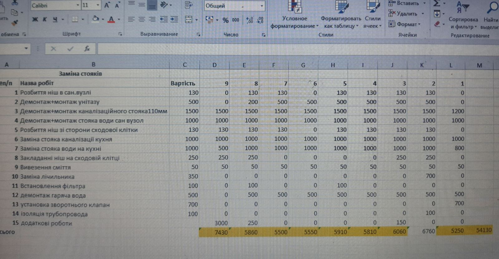Розрахунки і залишок
Під час робіт були здані старі труби на металобрухт, а також повернуті частина матеріалів які не знадобилиись. То ж підсумовуючи
- Продаж труб: 3200грн
- Повернення матерівалів: 1100грн
- Різниця зібраного\витраченого: 400грн
Як результат 4700грн залишались в фонді, з яких 1700грн 😞 пішло на усунення проблеми забитої каналізації, а 3000грн пішли на роботи в підвалі. Цікаво, що компанія оцінювала роботи в 3500грн, але у Тетяни на руках було тільки 3000грн, то ж сторгувались за цю сумму.
Лівий стояк
Особливісттю лівого стояка стало те що одна квартира не мала змоги оплатити роботи, то ж оплату робіт по цій квартирі відстрочили на декілька місяців і потім оплата буде прозведена з фонду ОСББ.
Вартість матеріалів
Для лівого стояка більшість матеріалів закуповувалась Тетяною. Тому маємо на руках чеки, що допоможе зрозуміти приблизну вартість матеріалів. Загалом зібрали на матеріали 15000грн з яких 15681грн були витрачені.
Вартість робіт
Роботи оплачуваливсь кожним мешканцем окремо. Чек робіт залежав від простоти доступу до стаяка, а також суммі робіт які необхідно було виконати по квартирі.
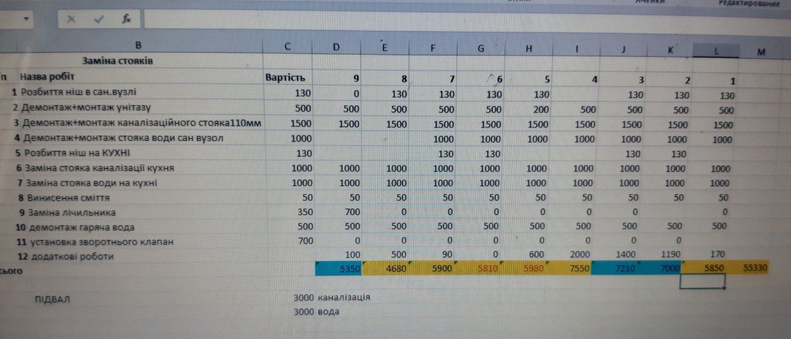Розрахунки і залишок
Як зазначалось вище оплата за ремонт першої квартири була відкладена на декілька місяців, то ж з фонду ОСББ ця сумма повинна буде бути сплаченою пізніше. Але також вдалось отримати кошти з продажу труб та поверненню матеріалів:
- Продаж труб: 4000грн
- Повернення матерівалів: 1661грн
- Різниця зібраного\витраченого: -681грн
Як результат маємо 4980грн з яких на підвал пішло 3000грн, та залишок в 1980грн пішов на заміну загальних труб в підвалі.
Підвал
Як вже було викладено раніше, підвал робився в декілька етапів. Спочатку для 3х кімнатиних квартир правого стояка, потім для 3х кімнатних квартир лівого стояка, і в завершенні загальні комунікації в підвалі та стояки до 2х кімнатних квартир.
Вартість матеріалів
Загальна вартість матеріалів для підвалу складає приблизно 7000грн.
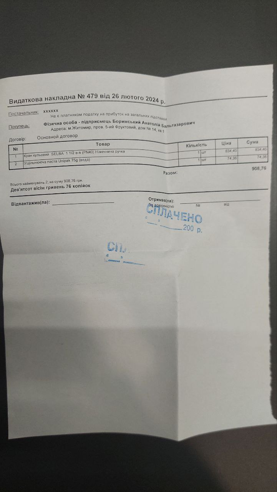
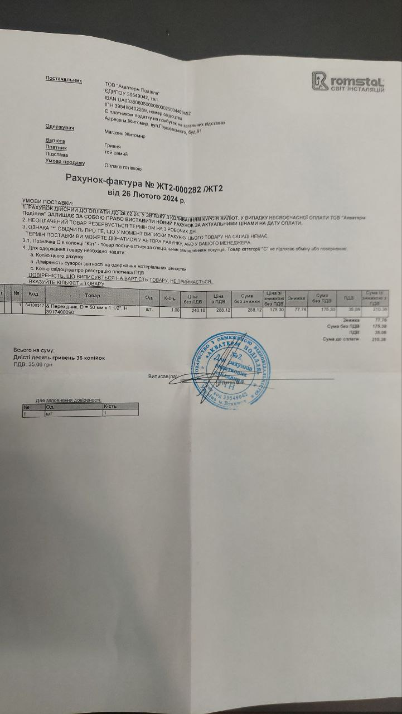
Вартість робіт
Вартість робіт склала приблизно 9000грн (узагальнено з лівим, правим стояками і загальними мережами) на заміну комунікацій та 1700грн на прочистку каналізації. Загалом 10700грн.
Розрахунки і залишок
В підвалі також були старі металеві труби, які можна було здати. Їх вдалось здати на загальну вартість 2120грн.
В результаті ми накопичили зі здачі труб і матерілів + залишок з робіт 11799грн з яких:
- Права сторона: 4700грн
- Ліва сторона: 4980грн
- Підвал: 2120грн
В результаті ми сплатили 17875грн:
- Роботи по каналізації (загальні): 6000грн
- Роботи по воді (загальні): 3000грн
- Прочистка каналізації: 1700грн
- Матеріали: 7175грн
Тому виникла ситуація коли Тетяні довелось з власного рахунку скомпенсувати 6075грн для того що б закрити питання заміни труб в підвалі. Тому якщо є бажаючі можна розділити цю сумму скинувши Тетяні будь-яку частинку на картку: 5167 8032 7096 3486 копіювати
Зведення результату
То ж, на сьогоднішній день стояки в 3х кімнатних квартирах повністтю замінені. Також замінені всі труби в підвалі. Але, що б досягти цього результату ми мали не тільки брати матеріали по найнижчих цінах, а й йти на такі міри як відкладення платежу. Тому в підсумку маємо:
- Перша квартира за матеріали в фонд ОСББ: 2000грн
- Перша (але по факту борг на ОСББ) квартира за роботу: 5850грн
- Тетяна заплатила: 6000грн
В цілому не вистачило 11850грн (не враховуючи матеріали, бо за них скидались всім будинком). Частину цих коштів ОСББ поверне компанії до кінця літа надходжень з в фонди, а 6000грн небайдужі мешканці будинку, сподіваюсь, розділять з Тетяною. Все ж спільну справу робимо.
Дякую всім за увагу!